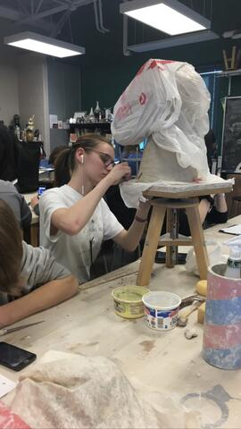
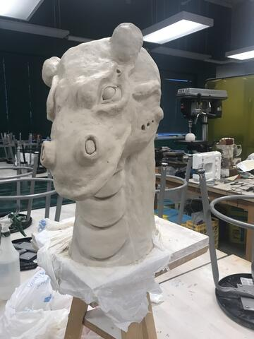
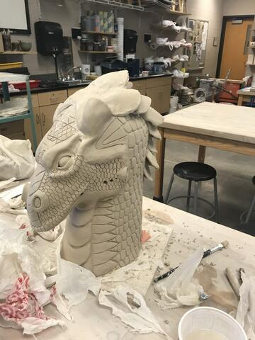
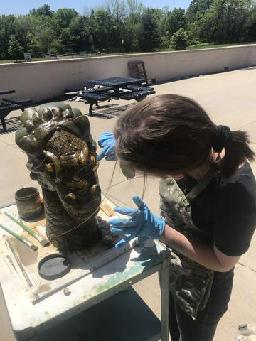
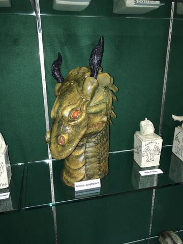

Clay Dragon
For this assignment, I was tasked with designing and creating an object of my choice using clay. The goal was to create a functional and aesthetically pleasing model while exploring textures and shapes. I focused on a dragon-inspired design, paying special attention to the detailing of the scales and posture.

Early-stage modeling and establishing the primary form
Process & Sculpting
The sculpting process began with a wire and foil armature to test the design and balance before moving onto adding the bulk of the clay. Through careful shaping, key details like the wings and facial structure were added. This iterative process allowed me to refine the overall look.

Work in Progress detail view

Texture and scale detailing
Finishing Touches
After the clay was fully shaped and baked, the piece was painted and sealed. The final model successfully achieves the initial design goals, showcasing an expressive pose and intricate textures.

Profile view of the finished piece

Alternate angle of the finished piece